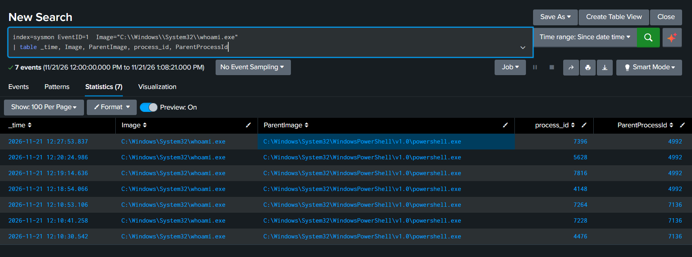
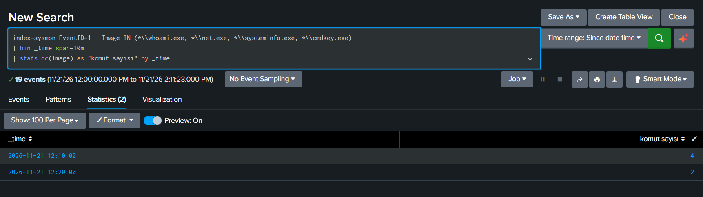
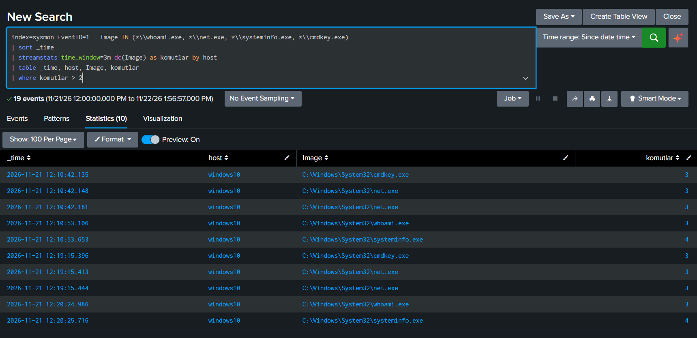

01 · Keşif komutları
Aynı makinede 3 dakika içinde en az 3 farklı yerel keşif aracının (whoami, net, systeminfo, cmdkey) çalıştırılması.
Saldırı
Invoke-AtomicTest T1033 -TestNumbers 7
Invoke-AtomicTest T1087.001 -TestNumbers 8
Invoke-AtomicTest T1082 -TestNumbers 1Tespit (SPL)
Son sürüm
index=sysmon EventID=1 Image IN (*\\whoami.exe, *\\net.exe, *\\systeminfo.exe, *\\cmdkey.exe)
| sort _time
| streamstats time_window=3m dc(Image) as komutlar by host
| table _time, host, Image, komutlar
| where komutlar > 2Yanlış alarmlar ve ayıklama
Geniş aramada beklemediğim 7 whoami çıktı, oysa testlerin hiçbiri whoami çalıştırmıyordu. Üst süreç kimliğine bakınca hepsinin test komutlarını başlatan PowerShell'den geldiğini gördüm: Atomic Red Team her testten 1-2 saniye önce kendi whoami'sini çalıştırıyor. Beni en çok bu şaşırttı, çünkü aynı bir saldırgan gibi davranıyor: önce kim olduğuna bakıyor, sonra ona göre hareket ediyor.
whoami'yi yine de listede bıraktım, çünkü gerçek saldırganlar da onu çok kullanıyor. Tek başına çalışan bir whoami kuralı tetiklemiyor, çünkü kural farklı araçların sayısına bakıyor. net1.exe'yi saymadım: net.exe her çalıştığında onu da başlatıyor, her komut iki kez sayılırdı.
Düzeltmeler
İlk denemede bin _time span=10m kullandım. Sabit kutu, olayların saatini belirtilen süreye yuvarlıyor. Bu görselleştirme için mantıklı, ama 10 dakikalık kutu iki ayrı çalıştırmayı birleştirdi, birini de ikiye böldü. Belli bir süre içinde ne olduğuna bakmak istediğimde streamstats daha iyi bir seçim: her olay için, o olaydan önceki belirtilen süredeki olaylara bakıyor. sort _time eklemeden pencere ters yöne bakıyordu, çünkü Splunk sonuçları yeniden eskiye getiriyor. Son olarak by host ekledim ki her makine ayrı sayılsın.
Ekran görüntüleri

query.exe olmadığı için query user hata veriyor.
whoami çalıştırmıyor; 7 whoami olayının hepsi Atomic Red Team'in kendisinden, her testten önce.
bin _time span=10m. Sabit kutular iki ayrı çalıştırmayı yanlış grupluyor.
by host, eşik 3 farklı araç. İki çalıştırma ayrı ayrı yakalandı.Test kanıtı
| Test | Zaman (VM saati) | Sonuç |
|---|---|---|
| Çalıştırma 1 | 2026-11-21 ~12:10:30 – 12:10:53 | 12:10:42.135'te yakalandı |
| Çalıştırma 2 | 2026-11-21 12:18:47 – 12:20:44 | 12:19:15.396'da yakalandı |
Çıkarılan ders
Eşiği normal trafiğe göre seçmek gerekiyor. 2 farklı araçta alarm verseydim, whoami ardından net user çalıştıran her yönetici alarm üretirdi. Bu yüzden eşiği 3 farklı araç yaptım. Lab'da gerçek kullanıcı trafiği olmadığı için bu eşiği ölçerek değil, mantıkla seçtim. Bedeli de var: 3 dakikadan yavaş yapılan bir keşif kaçabilir.
Tüm ayrıntılar (veri kaynakları, sınırlamalar, analistin sonraki adımları): detections/01-kesif-komutlari.md